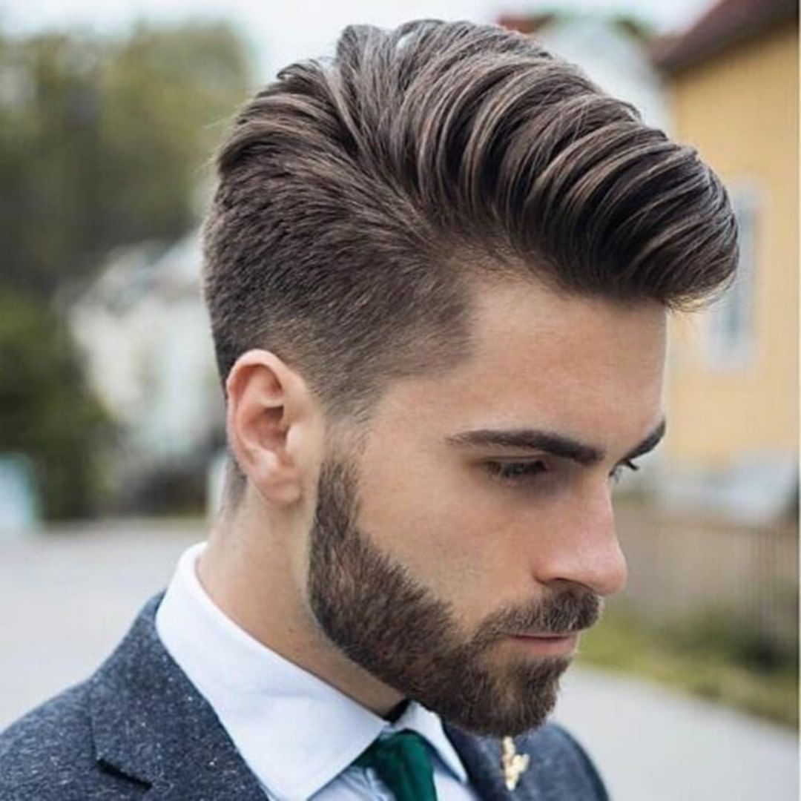
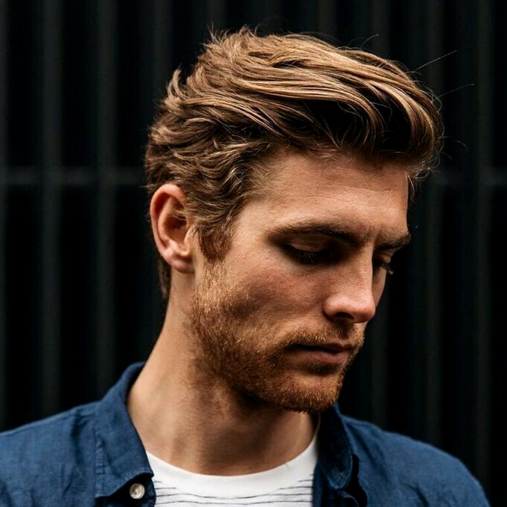

¬семи любима€ стрижка андеркат
будет в тренде в новом сезоне 2019 года.
ѕри этом волосы на макушке оставл€йте более длинными,
чем в классическом варианте стрижки андеркат,
особенно челку.
ј виски и затылочную часть сбривают полностью.
—трижка андеркат не очень хорошо смотритс€ на густых и вьющихс€ волосах.
ћодна€ мужска€ стрижка канадка, в 2019 году характеризуетс€ плавным переходом
височно-затылочной части к верхней части головы (макушки).
— канадкой хорошо смотритс€ ассиметрична€ коса€ челка,
которую можно укладывать набок или назад.
ѕри этом стрижка канадка отлично подойдет дл€ обладателей вьющихс€ волос.
—трижки на средние волосы укладывайте как можно естественней
или даже немного нер€шливо, при этом можете выделить боковой пробор.